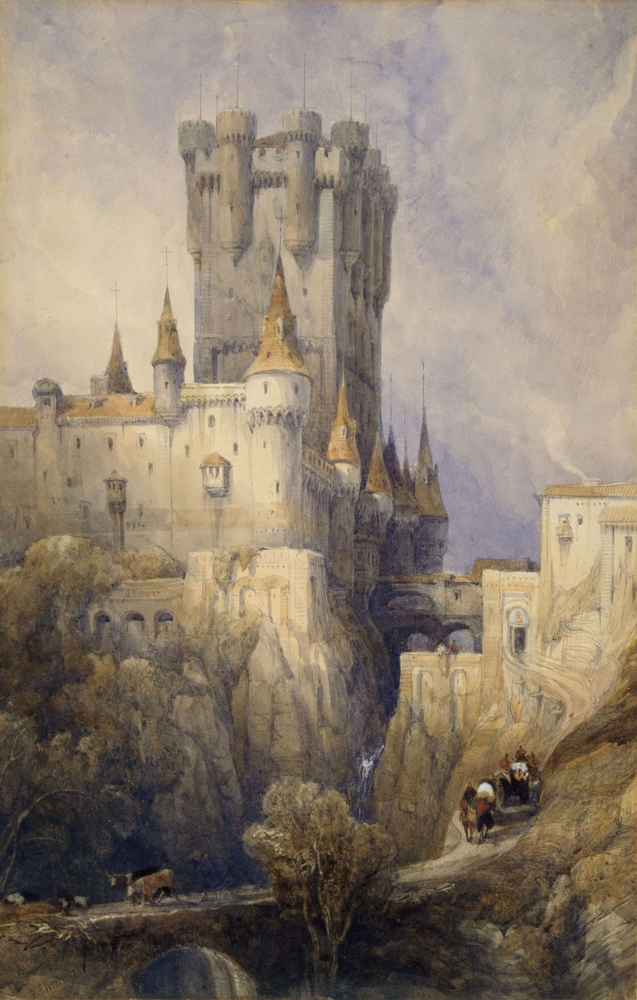

Destacado
Pintura – "La materia del gesto"
Obras que exploran el color, la emoción y la textura como expresiones del mundo interior y del gesto pictórico.
Ver másCreamos espacios donde el arte emergente puede resonar con libertad. Nos enfocamos en visibilizar talentos locales y propuestas que, por su autenticidad o riesgo, suelen quedar fuera del circuito tradicional. Cada exposición es una invitación a mirar desde otro lugar.
Obras que exploran el color, la emoción y la textura como expresiones del mundo interior y del gesto pictórico.
Ver másTrazos directos que revelan la estructura esencial de la imagen, donde la línea se convierte en lenguaje propio.
Ver másPiezas tridimensionales que dialogan con el espacio, el vacío y el cuerpo del espectador.
Ver másImágenes que detienen el tiempo y revelan lo íntimo o simbólico desde una mirada personal.
Ver másObras creadas con medios digitales, donde la tecnología amplía los límites del lenguaje visual.
Ver más